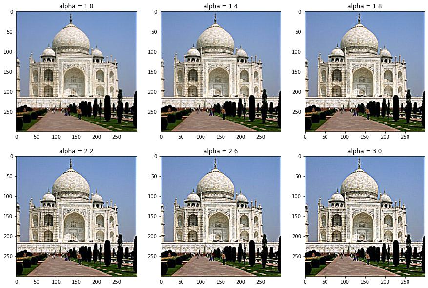
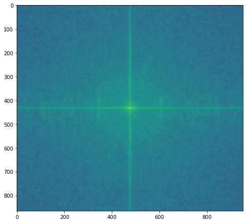

CS 180: Computer Vision, Fall 2024
Project 2: Filters & Frequencies
Rohan Gulati
SID: 3037864000
Overview
In this project, I got to thoroughly consider images in frequency space rather than in pixel space and utilize filters to create many interesting effects and alterations to images.
Throughout the project, I utilized Gaussian blurring to remove or isolate the high frequencies of images, which helped with anti-aliasing, image sharpening, and merging multiple images
together. In part 1, I created an edge detector by computing the changes in pixel values horizontally and vertically, and computing the magnitude of these changes over the whole image. Incorporating
Gaussian blurring helped reduce the amount of noise in the image, and I got to see how filters could be efficiently convolved with each other and then applied on an image once, rather than individually applied
on an image sequentially. In part 2.1, I implemented a way to sharpen images by isolating the high frequencies using a high-pass filter on an image, and then amplifying their frequencies in the result.
In part 2.2, I implemented a way to create a visual illusion with two images such that they look different relative to where you see it from. By aligning and overlaying two similar images
where the first only includes low frequencies and the latter includes only high frequencies, you can create a result that looks like image 1 from far away and image 2 when you are close.
In part 2.3 and 2.4, I created Gaussian and Laplacian stacks of various pairs of images with the goal of blending them together, given a particular mask. By breaking each pair of images down to their
composite frequencies and merging them using a smooth interpolation filter between similar frequencies before collapsing it into an image, you can make a cleanly blended result like with an apple and an orange or
maybe the Sun and a goat.
Overall, the most important thing I learned was the perspective of seeing images as composed of frequencies rather than pixels and how this can unlock doors to many new methods in image processing.
1.1: Finite Difference Operator
 Default Cameraman
Default Cameraman
|
Cameraman w/ dx filter
|
Cameraman w/ dy filter
|
|
|
Camerman w/ gradient magnitude off dx & dy filters
|
Cameraman w/ gradient magnitude - binarized (threshold = 60)
|
To compute the gradient magnitude, I first applied dx and dy filters which are effectively computing the difference between every adjacent pair of adjacent pixels both
vertically and horizontally. This is as granular as the partial derivatives can get. To compute the overall magnitude, I compute the L-2 norm of these two partial derivatives or
the square root of the sum of their squared values.
1.2: Derivative of Gaussian (DoG) Filter
|
Cameraman w/ Gaussian Blurring
|
After applying Gaussian blurring to the cameraman, we can see a lot of the details in the grass get removed. The lines and edges in the building become less distinct, and the details in the cameraman
become less pronounced as well.
|
Gaussian * dx filter
|
Gaussian * dy filter
|
|
Cameraman w/ Gaussian * dx filter
|
Cameraman w/ Gaussian * dy filter
|
 Cameraman w/ gaussian blurring and dx,dy filtering separately
Cameraman w/ gaussian blurring and dx,dy filtering separately
|
 Cameraman w/ Single Gaussian derivative filter
Cameraman w/ Single Gaussian derivative filter
|
Applying the Gaussian & the dx/dy filters on the cameraman individually produced the image on the left. Convolving the dx & dy filters with the Gaussian filter and applying it once
on the cameraman produced the image on the right. These two images are equivalent numpy matrices, showing the associative property of convolution. These results are also similar although
more smooth than the results without the Gaussian blur.
|
Cameraman w/ Gaussian & Derivative Filter - Binarized (threshold = 12)
|
Image Sharpening
Taj Mahal
 Original Taj Mahal
Original Taj Mahal
|
Low Frequency Taj Mahal
|
Restored Taj Mahal, alpha = 3
|
|
|

Taj Mahal w/ various high-pass amplification
|
To sharpen these images, I first filtered out the high frequencies of the image by subtracting the Gaussian-blurred low frequency variation of the image
from the original. Then, I applied a weight "alpha" to this difference and added it back to the blurred low frequency image to emphasize the higher frequency aspects of the image.
Panda
 Original Panda
Original Panda
|
|
Restored Panda, alpha = 4
|
|
|
Panda w/ various high-pass amplification
|
2.2 Hybrid Images
Derek & Nutmeg
 Derek
Derek
|
 Cat
Cat
|
|
To create these illusions, I use a Gaussian filter to blur the background image and a high pass filter to isolate the high frequencies of the second image.
This way, only the background image (Derek) is visible from far away, and when you are close, you can see the high frequency image (the cat). Below are more examples.
Perry the Platypus
|
Platypus
|
Perry the Platypus
|
 Agent P
Agent P
|
Blinking Guy
Shrek & Donkey (Failure)
|
Shrek
|
 Donkey
Donkey
|
While they had similar expressions, a simple alignment and frequency difference seemed to not be enough to create the same effect, because
the structures of the two images appear inherently different.
Wish You Were Here x Heroes & Villains (Favorite)
 Wish You Were Here (1975) - Pink Floyd
Wish You Were Here (1975) - Pink Floyd
|
Heroes & Villains (2022) - Metro Boomin
|
|
|
Pink Floyd x Metro (Normalized)
|
|
Wish You Were Here Album Cover Frequency
|
Heroes & Villains Album Cover Frequency
|
|
|
Wish You Were Here Low-Pass Filtered Frequency
|
 Heroes & Villains High-Pass Filtered Frequency
Heroes & Villains High-Pass Filtered Frequency
|

Hybrid Image Frequency
|
|
2.3 Gaussian and Laplacian Stacks
To create the Gaussian and Laplacian stacks, I iteratively applied Gaussian blurring for each new layer in the Gaussian stack in a particular image.
Here, the first layer is just the original image. For the Laplacian stack, I took the difference between each Gaussian layer for each layer in the Laplacian stack, with the
final image layer being the last layer of the Gaussian stack. This last layer holds all the low frequencies remaining that the blurring didn't remove. As a result,
upon collapsing the Laplacian stack, we are still left with the original image.
Szeliski Figure 3.42 Recreation
2.4 Multi-resolution Blending
Oraple
 Orange
Orange
|
 Apple
Apple
|
Mask
|
Cheesy Moon
My Glorious King